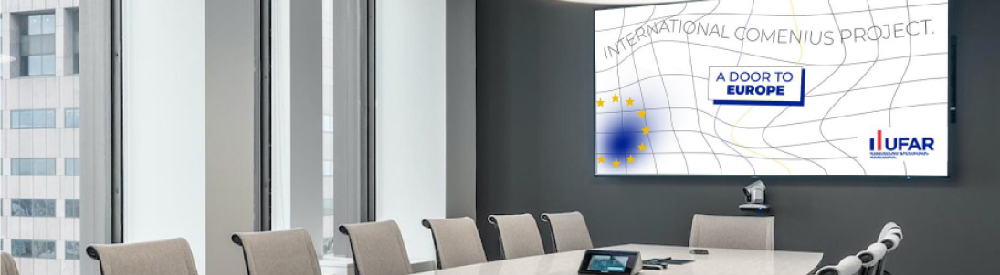

ufar international

universite jean moulin lyon 3
L'Université Jean-Moulin-Lyon-III (UJML) est le partenaire académique historique de l'UFAR. Sa contribution dans la visibilité locale et internationale de l’UFAR est majeure à travers plus de 20 ans de soutien et d’accompagnement au développement de l’UFAR vers les standards internationaux. Elle est souvent citée comme l’Alma Mater de l’UFAR.
universite toulouse 3 paul sabatier
Depuis 2018, l'UFAR a développé un partenariat académique avec l'Université Toulouse-III-Paul-Sabatier dans le cadre de l'ouverture de la faculté d'informatique et de mathématiques appliquées (IMA).
les projects
-
besman

-
erasmus+
-
eu-tumo
-
francophonie